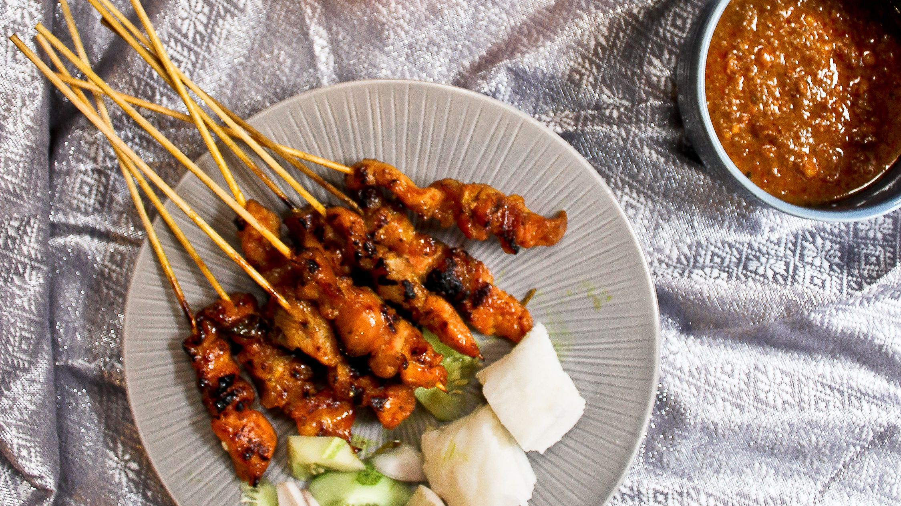

Seen amazing Singaporean food but can't recognise it? Let us help.
This page aims to help foreigners recognise Singaporean food and understand its history.
Snap and upload here!
Seen amazing Singaporean food but can't recognise it? Let us help.
This page aims to help foreigners recognise Singaporean food and understand its history.
Snap and upload here!
This model is built upon 1224 images of 12 different classes of Singaporean food, with the training,validation and test set split of 60:20:20.
The food classifier is built using transfer learning of the InceptionV3 model, trained using the recognised Imagenet. The pre-trained weights were then used in this model,
of which consisting of 315 layers and 263,820 trainable parameters. The model architecture also consists of batch normalization with early stop monitoring on validation loss,
helping to prevent overfitting.
The Adaptive Moment Estimation (Adam) optimizer is used for combining the best properties of the AdaGrad and RMSProp algorithms to handle sparse gradients on noisy problems.
As a result, the model has a 92.17% validation accuracy over 243 images in the validation set., while also achieving 91.67% accuracy over the test set.
This app is created by Harry as part of AIAP7.
Model Information in JSON

Chilli crab is a Singaporean seafood dish. Mud crabs are commonly used and are stir-fried in a semi-thick, sweet and savoury tomato-and-chilli-based sauce.
Despite its name, chilli crab is not a very spicy dish. It is listed at number 35 on the World's 50 most delicious foods list compiled by CNN Go in 2011.

A curry puff is a snack of Malayan origin. It is a small pie consisting of curry with chicken and potatoes in a deep-fried or baked pastry shell.
The curry is quite thick to prevent it from oozing out of the snack. Although the origins of this snack are uncertain,
the snack is believed to have originated in Malaya due in part to the various influences of the British Cornish pasty,
the Portuguese empanada and the Indian samosa during the colonization era. The curry puff is one of several "puff" type pastries with different fillings,
though now it is by far the most common. Other common varieties include eggs, sardines, and onions or sweet fillings such as yam.

Dim sum is a large range of small dishes that Cantonese people traditionally enjoy in restaurants for breakfast and lunch.
In the tenth century, when the city of Guangzhou (Canton) began to experience an increase in commercial travel,
travelers concurrently began to frequent teahouses for small-portion meals with tea called yum cha, or "drink tea" meals.
Yum cha includes two related concepts.[6] The first is "yat jung leung gin" (一盅兩件), which translates literally as "one cup, two pieces".
This refers to the custom of serving teahouse customers two pieces of delicately made food items, savory or sweet, to complement their tea.
The second is dim sum and translates literally to "touching heart", the term used to designate the small food items that accompanied the tea drinking.

Ais kacang, literally meaning "bean ice", also commonly known as ABC (acronym for Air Batu Campur [air ˈbatu tʃamˈpʊr], meaning "mixed ice"),
is a Malaysian dessert which is also common in Singapore (where it is called ice kachang) and Brunei.
Traditionally, an ice shaving machine is used to churn out the shaved ice used in the dessert, originally hand cranked but now more often motorised.
Many Southeast Asian coffee shops, hawker centres and food courts sell this dessert. Ais kacang is considered one of Malaysia's most unique dishes, and is featured
in many articles as such.

Kaya toast is a breakfast dish originating from Singapore. The food consists of two slices of toast with butter and kaya (coconut jam),
commonly served alongside coffee and soft-boiled eggs. Kaya toast can also be enjoyed in the afternoon as a snack.
The introduction of kaya toast happened in close timing with the appearance of kopi tiams or coffee shops in the country.
It is speculated that Hainanese immigrants that came up with the dish would use their learnt skills to open these kopi tiam establishments.
The popularity of kaya toast is so tightly linked with kopi tiams that even now, Singaporean shop chains such Ya Kun Kaya Toast,
Killiney Kopitiam and Toast Box continue to rejuvenate the popularity of kaya toast in modern times with re-creations and adaptations of the toast.

This is something you should definitely try at least once. Flavorful fried chicken is accompanied with a savory sweet chili sauce and served with
white rice steamed in chicken stock and aromatics, with a side of chicken soup to wash it all down. Every single aspect of this meal is a treat to the senses.

Popiah is a Fujianese/Teochew-style fresh spring roll. Popiah is often eaten in the Fujian province of China and its neighbouring Chaoshan and in Taiwan,
during the Qingming Festival. The origin of popiah dates back to the 17th century.

Roti canai, or roti chenai, also known as roti cane and roti prata,
is an Indian-influenced flatbread dish found in several countries in Southeast Asia, including Brunei, Indonesia, Malaysia and Singapore.

Take a walk in any hawker centre by the beach in Singapore and Malaysia, and you are almost guaranteed to catch a whiff
of this popular dish –Sambal Stingray! It’s gently grilled over a large banana leaf and slathered over with shallots, garlic,
ginger and herby lemongrass, and of course a dollop of sweet, creamy sambal belacan.

Satay, or sate in Indonesian and Malay spelling, is a Southeast Asian dish of seasoned, skewered and grilled meat, served with a sauce.

Douhua is the short form of doufuhua. It is a Chinese snack made with very soft tofu. It is also referred to as tofu pudding, soybean pudding, or tofu brains.

Wonton noodles is a Cantonese noodle dish. Wonton noodles were not given their name, húntún, until the Tang Dynasty.
The dish is popular in Southern China, Hong Kong, Indonesia, Malaysia, Singapore and Thailand. The dish is usually served in a hot broth,
garnished with leafy vegetables and wonton dumplings.
Content and description retrieved from Wikipedia.